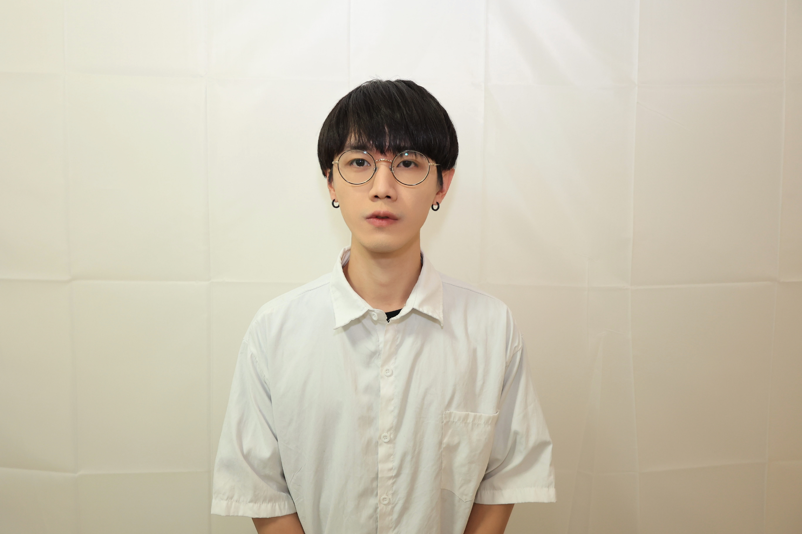

把模糊需求，變成可驗證方案。
我是郭奕圻 Yi-Chi Kuo。擅長從使用者需求、商業目標與系統限制中釐清問題，定義產品範圍、流程規格與成效指標，並協調設計、工程、行銷與廠商，推進方案上線、交付與後續優化。

需求 → 範圍 → 交付
USER NEED / 需求釐清
使用情境、痛點、目標、限制、關係人、成功標準
PRODUCT SCOPE / 範圍定義
流程、規格、優先順序、WBS、責任分工、時程
DELIVERY / 交付追蹤
進度、風險、數據、回饋、上線與優化
// RPG 雙棲進化技能樹
點擊高亮節點，即可逐步「解鎖」並進化我的技能路徑。這代表了我從自主創業到 Martech 自動化與專案管理解鎖的成長歷程。
1. 專案管理 (PM)
精準掌控專案節點，確保多專案並行時能如期、如質交付。
作為工程、設計與行銷的橋樑，翻譯模糊需求為具體規格。
控制專案成本與外包商進度，主動識別並排除潛在風險。
2. 行銷與數據
串接 GA4、Looker Studio，建立即時營運與行銷成效看板。
Meta、Google 廣告實戰，以 ROI 為導向持續迭代素材與受眾。
主導線下體驗活動與媒體接待，控管預算並創造社群聲量。
3. 自動化與 Martech
利用 Omnichat 建立高轉化 LINE 機器人，整合 Cyberbiz 會員。
使用 Make, n8n 串接 API，自動化處理跨平台資訊與通知。
設計會員分眾標籤、自動化推播劇本，提升顧客終身價值。
4. 創意 AI 實驗室
訓練專屬 AI 模特兒與產品 LoRA，為品牌節省數十萬拍攝成本。
自主開發 IG 互動濾鏡，結合社群裂變創造數十萬次使用量。
精通 Premiere Pro、After Effects 影音剪輯與動態特效，具備從分鏡企劃、現場攝影到後製輸出的完整製作能力。YouTube 頻道狂新聞剪輯風格，單片最高 28K+ 觀看；近期也運用 Midjourney、Kling、Hailuo 等 AI 工具代營運品牌粉專影音內容。
精通 Photoshop、Illustrator，具備品牌識別設計、社群 KV 製作、電商視覺包裝能力，曾為珍珍食品、中化健康等品牌產出商業廣告素材。
// 工作經歷時間軸
海森智能行銷顧問股份有限公司 - 數位行銷暨 Martech 專案經理
協助品牌規劃數位行銷流程、電商平台應用、會員經營與成效追蹤，運用 WordPress、Cyberbiz、Omnichat、GA4、n8n 等工具串接官網、社群與會員系統。主導海外精品品牌 ALAIN DUCASSE 進入台灣市場的電商官網建置專案。
S23U 手機租賃服務 - 創辦人 / 執行長
自主創業，鎖定演唱會與追星情境的高倍變焦攝影器材短期租賃需求，從 0 到 1 建立商業模式、預約流程與風控機制。10 個月完成回本，客訴率 0%，首次體驗回購率達 100%。
星網股份有限公司 - 專案經理 (PM)
負責 Panasonic 電視、耳機、相機等多產品線整合行銷專案。獨立規劃執行 LUMIX G9II 全台四場體驗會（台北、台中、高雄、台南），現場單日成交五單，累計 200+ 參與者，社群討論度提升 50%。